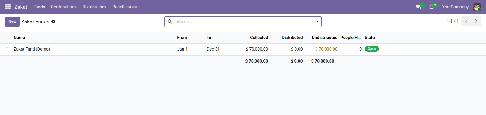

<section style="padding:32px 0;font-family:Roboto,Helvetica,Arial,sans-serif;color:#2b3a34;">
  <div style="max-width:900px;margin:0 auto;padding:0 24px;">

    <p style="font-size:12px;letter-spacing:.14em;text-transform:uppercase;color:#0b6b57;font-weight:600;margin:0 0 10px;">Accounting</p>
    <h1 style="font-size:40px;line-height:1.1;margin:0 0 14px;font-weight:700;">Zakat Administration</h1>
    <p style="font-size:19px;line-height:1.55;color:#4c5a55;max-width:640px;margin:0 0 28px;">Collect zakat into a fund, distribute it to people who qualify, and be able to show that the two reconcile.</p>

    <div style="background:#f6f7f5;border-left:3px solid #0b6b57;padding:18px 22px;margin:0 0 32px;font-size:16px;line-height:1.6;"><strong>Zakat is not an expense.</strong> It is an obligation calculated on wealth, collected into a fund and distributed under defined categories. Recording it as ordinary expenses loses the part that matters: the link between what was collected and what it paid for.</div>

    <div style="margin:0 0 34px;">
      
      <div style="font-size:13px;color:#75837d;padding-top:8px;">Funds, showing what was collected and what is still owed</div>
    </div>

    <h2 style="font-size:24px;margin:0 0 16px;font-weight:600;">Two rules the software enforces</h2>
    <ul style="font-size:16px;line-height:1.7;color:#4c5a55;margin:0 0 30px;padding-left:20px;">
      <li><strong>Nothing is distributed that was never collected</strong> — marking a distribution as paid is refused if it exceeds what the fund actually holds — and a pledge does not raise that limit, because a pledge is not money</li>
      <li><strong>A fund cannot be closed over an undistributed balance</strong> — zakat collected and not yet given out is owed to beneficiaries, not held by the organisation, so closing the books on it is refused until it is distributed or carried forward</li>
    </ul>

    <h2 style="font-size:24px;margin:0 0 16px;font-weight:600;">The eight categories</h2>
    <p style="font-size:16px;line-height:1.65;color:#4c5a55;margin:0 0 30px;">Beneficiaries are recorded against the eight eligible categories — <bdi>فقیر</bdi>, <bdi>مسکین</bdi>, <bdi>عامل</bdi>, <bdi>مؤلفة القلوب</bdi>, <bdi>الرقاب</bdi>, <bdi>غارم</bdi>, <bdi>فی سبیل الله</bdi>, <bdi>ابن السبیل</bdi> — with the assessment of why the person qualifies and who verified it, kept on the record rather than in somebody's memory.</p>

    <h2 style="font-size:24px;margin:0 0 16px;font-weight:600;">So the same households are not reached twice</h2>
    <p style="font-size:16px;line-height:1.65;color:#4c5a55;margin:0 0 14px;">Each beneficiary carries how many times they have been helped, how much in total and when they last received something — across <em>every</em> fund, not just the one in front of you.</p>
    <p style="font-size:16px;line-height:1.65;color:#4c5a55;margin:0 0 30px;">That is what stops a well-known family being assisted three times while a street away somebody is missed, which is the failure that quietly discredits a distribution programme.</p>

    <h2 style="font-size:24px;margin:0 0 16px;font-weight:600;">The record a donor can be shown</h2>
    <ul style="font-size:16px;line-height:1.7;color:#4c5a55;margin:0 0 30px;padding-left:20px;">
      <li><strong>Cash, bank transfer or in kind</strong> — with what was actually handed over recorded when it was not money</li>
      <li><strong>Anonymous contributions</strong> — zakat is often given without the giver being named — the record still exists, the name simply is not shown</li>
      <li><strong>Signed receipts</strong> — tracked, and their absence is searchable</li>
      <li><strong>Collected, distributed and undistributed</strong> — on the fund, at all times, reconciling to each other</li>
    </ul>

    <div style="border-top:1px solid #dce1db;padding-top:20px;font-size:14px;color:#75837d;">Odoo 19.0 Community · depends on <code>mail</code> and <code>af_l10n_base</code>.</div>

  </div>
</section>
